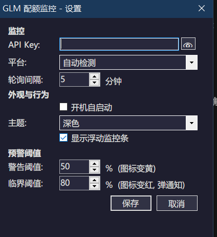

设置面板 SETTINGS
深色模式讲究到
每一个控件
🎨

📋 分区排版
监控 / 外观与行为 / 预警阈值，一目了然
🌙 全控件适配
下拉框逐项自绘，拒绝系统白块乱入
⚙️ 阈值自定义
50% 变黄、80% 变红弹通知，全可调
GitHub 开源 · MIT 协议
github.com/mydelren/GLMQuotaMonitor
⚡ UI · 文案 · 截图管线 —— 全由 GLM-5.3-Flash 完成
⭐ 点个 Star